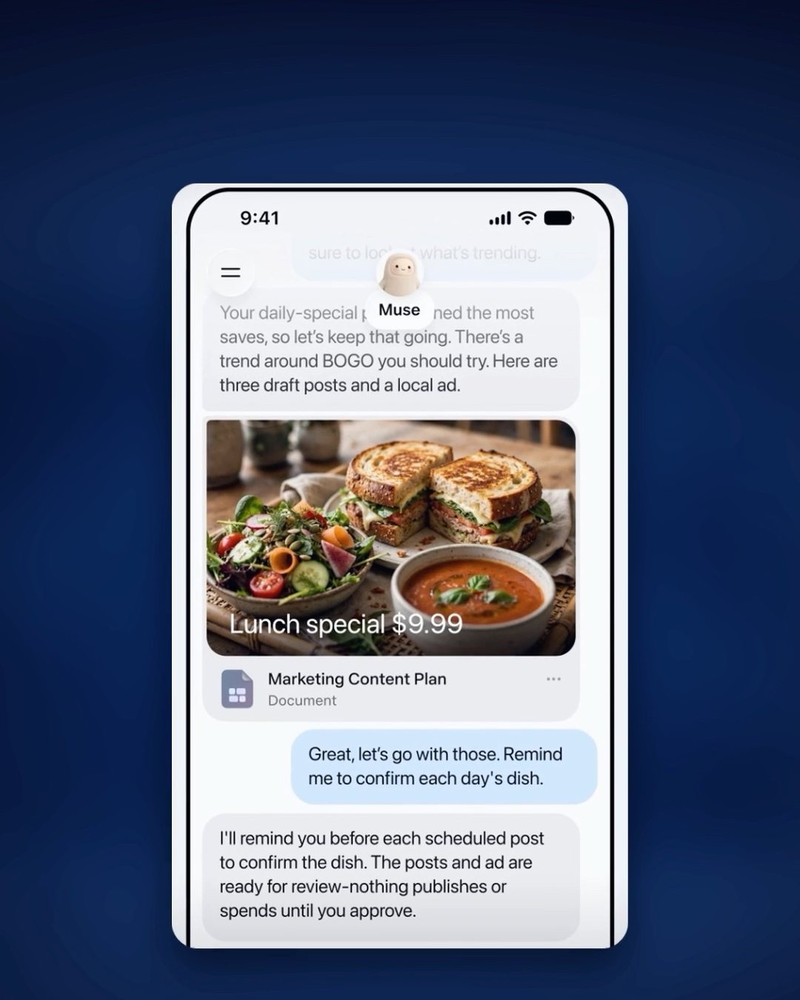

The short versionOn September 29, Meta announced Muse for Small Business. Its Muse AI agent can now connect to Instagram professional analytics, Facebook Pages and Meta ad accounts, plus tools like Shopify, Intuit QuickBooks, Stripe, Canva, Klaviyo and Slack. Meta says nothing publishes, sends or spends without your approval, and Muse is free for most needs, with paid plans for more.
Meta's AI agent is moving from your personal life into your business. On September 29, Meta announced Muse for Small Business, adding new skills and connectors so its Muse agent can help people run their businesses.
What happened
Meta introduced Muse earlier in September as a personal AI agent, available in the US and Canada. The small business version plugs it into the accounts and tools owners already use. According to TechCrunch, Muse topped the app charts in the U.S. and Canada, ahead of ChatGPT, after its launch.
What it connects to
Meta says Muse can connect your Instagram professional account analytics, Facebook Pages and Meta ad accounts "in a few clicks." Beyond Meta's own apps, the named connectors are:
Asana, Box, Canva, Dropbox, Figma, Granola, HighLevel, Intuit QuickBooks, Klaviyo, Lovable, Notion, Shopify, Slack, Stripe and Zoom, with custom connectors supported too. Intuit covered the QuickBooks side in its own post.
With that access, Meta says Muse can help build growth plans from your sales and campaigns, improve ads and content by analyzing performance and drafting campaigns, keep an eye on financial performance, and flag tasks worth doing.
The guardrails and the price
Meta's line on control is direct: "You're in control: nothing publishes, sends, or spends without your approval." On cost, Meta says Muse is free for most of what people need, with subscription plans for those who want more. Specific prices for business use weren't in the announcement.
Meta also quoted Tom Mulholland, who owns Mulholland Grocery in Malvern, Iowa: "I work about 65 hours a week, and there are so many things where I'm the only one who can do them."
Why brands should care
Meta has scale here. "We have 200 million small business owners on our platform at Meta," Meta President and Vice Chairman Dina Powell McCormick told CNBC. An agent that can see your Instagram analytics, your ad account and your Shopify sales at once can connect dots that usually live in three different tabs.
It also means an AI can draft ads against a real ad account. The approval step is what keeps that useful instead of expensive.
What to do
- Start with read-only jobs. Ask for a performance summary or growth plan before letting it draft anything.
- Connect only what you need. Instagram and your ad account first; add finance tools once you trust the output.
- Keep approvals on. Review every post, send and spend it proposes.
- Check its numbers. Compare its summaries against Ads Manager and your store dashboard before acting.
- Keep strategy with people. Use it for drafts and analysis; positioning and taste are still your call.
Sources
- Meta: Introducing Muse for Small Business
- Intuit: QuickBooks joins Muse for Small Business
- TechCrunch: Meta is expanding Muse to small businesses
- CNBC: Meta is bringing Muse AI to small businesses
FAQ
What is Muse for Small Business?
It's Meta's expansion of its Muse AI agent for business owners, announced September 29, 2026, adding skills and connectors so Muse can work with your business accounts and tools.
What apps does Muse for Small Business connect to?
Instagram professional analytics, Facebook Pages and Meta ad accounts, plus Asana, Box, Canva, Dropbox, Figma, Granola, HighLevel, Intuit QuickBooks, Klaviyo, Lovable, Notion, Shopify, Slack, Stripe and Zoom. Custom connectors are also supported.
Is Muse for Small Business free?
Meta says Muse is free for most of what people need, with subscription plans for those who want more. Meta hasn't published specific prices for business use in its announcement.